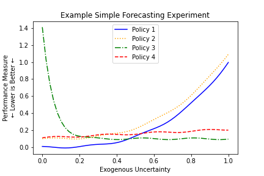
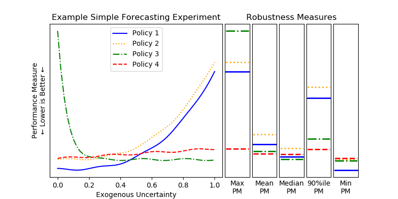

[1]:
import emat, numpy, pandas
emat.versions()
emat 0.2.5, ema_workbench 2.1.506, plotly 4.1.1
Optimization Tools¶
Typically, transportation policy planning models will be used to try to find policies that provide the “best” outcomes. In a traditional analytical environment, that typically means using models to find optimal outcomes for performance measures.
Transportation models as used in the TMIP-EMAT frawework are generally characterized by two important features: they are subject to significant exogenous uncertainties about the future state of the world, and they include numerous performance measures for which decision makers would like to see good outcomes. Therefore, optimization tools applied to these models should be flexible to consider multiple objectives, as well as be robust against uncertainty.
Multi-Objective Optimization¶
With exploratory modeling, optimization is also often undertaken as a multi-objective optimization exercise, where multiple and possibly conflicting performance measures need to be addressed simultaneously. A road capacity expansion project is a good example of a multi-objective optimization problem. In such a situation, we want to expand the capacity of a roadway, both minimizing the costs and maximizing the travel time benefits. A smaller expansion project will cost less but also provide lesser benefits. Funding it with variable rate debt might decrease expected future costs but doing so entails more risk than fixed-rate debt.
Instead of trying to simplify a multi-objective into a simple-objective one, an alternate approach is to preserve the multi-objective nature of the problem and find a set or spectrum of different solutions, each of which solves the problem at a different weighting of the various objectives. Decision makers can then review the various different solutions, and make judgements about the various trade-offs implicit in choosing one path over another.
Within a set of solutions for this kind of problem, each individual solution is “Pareto optimal”, such that no individual objective can be improved without degrading at least one other objective by some amount. Thus, each of these solutions might be the “best” policy to adopt, and exactly which is the best is left as a subjective judgement to decision makers, instead of being a concretely objective evaluation based on mathematics alone.
Robust Optimization¶
Robust optimization is a variant of the more traditional optimization problem, where we will try to find policies that yield good outcomes across a range of possible futures, instead of trying to find a policy that delivers the best outcome for a particular future.
To conceptualize this, let us consider a decision where there are four possible policies to choose among, a single exogenous uncertainty that will impact the future, and a single performance measure that we would like to mimimize. We have a model that can forecast the performance measure, conditional on the chosen policy and the future value of the exogenous uncertainty, and which gives us a forecasts as shown below.
In a naive optimization approach, if we want to minimize the performance measure, we can do so by selecting Policy 1 and setting the exogenous uncertainty to 0.1. Of course, in application we are able to select Policy 1, but we are unable to actually control the exogenous uncertainty (hence, “exogenous”) and we may very well end up with a very bad result on the right side of the figure.
We can see from the figure that, depending on the ultimate value for the exogenous uncertainty, either Policy 1 or Policy 3 might yield the best possible value of the performace measure. However, both of these policies come with substantial risks as well – in each Policy there are some futures where the results are optimal, but there are also some futures where the results are exceptionally poor.
In contrast with these optimal policies, Policy 4 may be considered a “robust” solution. Although there is no value of the exogenous uncertainty where Policy 4 yields the best possible outcome, there is also no future where Policy 4 yields a very poor outcome. Instead, across all futures it is always generating a “pretty good” outcome.
Different expectations for the future may lead to different policy choices. If the decision maker feels that low values of the exogenous uncertainty are much more likely than high values, Policy 1 might be the best policy to choose. If high values of the exogenous uncertainty are expected, then Policy 3 might be the best choice. If there is not much agreement on the probable future values of the exogenous uncertainty, or if decision makers want to adopt a risk-averse stance, then Policy 4 might be the best choice.
The remaining policy shown in the figure, Policy 2, is the lone holdout in this example – there is no set of expectations about the future, or attitudes toward risk, that can make this policy the best choice. This is because, no matter what the future value of the exogenous uncertainty may be, the performance measure has a better outcome from Policy 1 than from Policy 2. In this circumstance, we can say that Policy 2 is “dominated” and should never be chosen by decision makers.
Robustness Functions¶
For example, consider the Example Simple Forecasting Experiment shown above. In this example, we could compute a robustness measure for each policy where we calculate the maximum value of the performance measure across any possible value of the exogenous uncertainty. This value is shown in the first column of robustness measures in the figure below, and under this measure Policy 4 is far and away the best choice.
The “maximum performance measure result” robustness function is a very risk averse approach, as no consideration is given to the shape or distribution of performance measure values other than the maximum. Consider these same policies shown if Policy 4 is not available. In this case, the next best policy under this robustness function is Policy 1, as it has the next lowest maximum value. However, when we look at a comparison between Policies 1 and 3 in aggregate, we might easily conclude that Policy 3 is a better choice overall: it is better than Policy 1 on average, as judged by the mean, median, and 90th percentile measures. The only reason Policy 3 appears worse than Policy 1 on the initial robustness function is that it has an especially poor outcome at one extreme end of the uncertainty distribution. Depending on our attitude towards risk on this performance measure, we may want to consider using some of these alternative robustness functions. An additional consideration here is that the various robustness measures in this example case are all unweighted measures: they implicitly assume a uniform probability distribution for the entire range of possible values for the exogenous uncertainty. If we are able to develop a probability distribution on our expectations for the future values of the exogenous uncertainties, we can use that probability distribution to weight the robustness functions appropriately, creating more meaningful values, particularly for the non-extreme value robustness functions (i.e., everything except the min and max).
Mechanics of Using Optimization¶
Policy Optimization: Search over Levers¶
The simplest optimization tool available for TMIP-EMAT users is a search over policy levers, which represents multi-objective optimization, manipulating policy lever values to find a Pareto optimal set of solutions, holding the exogenous uncertainties fixed at a particular value for each uncertainty (typically at the default values). This is often a useful first step in exploratory analysis, even if your ultimate goal is to eventually undertake a robust optimization analysis. This less complex optimization can give insights into tradeoffs between performance measures and reasonable combinations of policy levers.
To demonstrate a search over levers, we’ll use the Road Test example model.
[2]:
import emat.examples
scope, db, model = emat.examples.road_test()
[3]:
scope['value_of_time'].max
[3]:
0.25
The scope defined for a model in TMIP-EMAT will already provide information about the preferred directionality of performance measures (i.e., ‘maximize’ when larger values are better, ‘minimize’ when smaller values are better, or ‘info’ when we do not have a preference for bigger or smaller values, but we just want to be tracking the measure). We can see these preferences for any particular performance measure by inspecting the scope definition file, or by using the info method of
emat.Measure instances.
[4]:
scope['net_benefits'].info()
net_benefits:
shortname: Net Benefits
kind: maximize
To conduct an optimization search over levers, we’ll use the optimize method of the TMIP-EMAT model class, setting the search_over argument to 'levers'. In this example, we will set the number of function evaluations (nfe) to 10,000, although for other models you may need more or fewer to achieve a good, well converged result. In a Jupyter notebook environment, we can monitor convergence visually in real time in the figures that will appear automatically.
[5]:
result = model.optimize(
nfe=10_000,
searchover='levers',
check_extremes=1,
cache_file='./optimization_cache/road_test_search_over_levers.gz',
)
The optimize method returns an OptimizationResult object, which contains the resulting solutions, as well as some information about how they were derived. We can review the raw values of the solutions as a pandas DataFrame, or see the scenario values used to generate these solutions.
[6]:
result.result.head()
[6]:
| expand_capacity | amortization_period | debt_type | interest_rate_lock | build_travel_time | time_savings | value_of_time_savings | net_benefits | cost_of_capacity_expansion | |
|---|---|---|---|---|---|---|---|---|---|
| 0 | 50.014613 | 50 | Paygo | True | 61.777085 | 7.222915 | 54.171861 | -73.429075 | 127.600936 |
| 1 | 6.000196 | 50 | Paygo | True | 67.128790 | 1.871210 | 14.034073 | -1.274065 | 15.308138 |
| 2 | 34.576642 | 50 | Paygo | False | 62.743871 | 6.256129 | 46.920964 | -41.293493 | 88.214457 |
| 3 | 14.079862 | 50 | Paygo | True | 65.313817 | 3.686183 | 27.646376 | -8.275198 | 35.921574 |
| 4 | 2.947572 | 50 | Paygo | True | 68.012685 | 0.987315 | 7.404862 | -0.115200 | 7.520062 |
[7]:
result.scenario
[7]:
Scenario({'alpha': 0.15, 'beta': 4.0, 'input_flow': 100, 'value_of_time': 0.075, 'unit_cost_expansion': 100, 'interest_rate': 0.03, 'yield_curve': 0.01})
We can visualize the set of solutions using a parallel coordinates plot. This figure is composed of a number of vertical axes, one for each column of data in the results DataFrame. Each row of the DataFrame is represented by a chord that connects across each of the vertical axes.
By default, the axes representing performace measures to be minimized are inverted in the parallel coordinates, such that moving up along any performance measure axis results in a “better” outcome for that performance measure.
In the figure below, we can quickly see that pretty much all the all of the Pareto optimal policy solutions for our reference scenario share an amortization period of 50 years, and all share a debt type of ‘Paygo’. By contrast, the set of solutions include multiple different values for the expand capacity lever, ranging from 0 to 100. These different values offer possible tradeoffs among the performance measures: lower levels of capacity expansion (shown in yellow) will maximize net benefits and minimize the cost of the project, but they will also fail to provide much travel time savings. Conversely, larger levels of capacity expansion will provide better travel time savings, but will not perform as well on costs. It is left up the the analysts and decision makers to judge what tradeoffs to make between these conflicting goals.
[8]:
result.par_coords()
query method of a pandas DataFrame.[9]:
result.result.query("amortization_period != 50")
[9]:
| expand_capacity | amortization_period | debt_type | interest_rate_lock | build_travel_time | time_savings | value_of_time_savings | net_benefits | cost_of_capacity_expansion | |
|---|---|---|---|---|---|---|---|---|---|
| 9 | 0.0 | 47 | Paygo | True | 69.0000 | 0.0000 | 0.00000 | 0.00000 | 0.00000 |
| 10 | 100.0 | 49 | Paygo | True | 60.5625 | 8.4375 | 63.28125 | -194.18194 | 257.46319 |
The first row in this table shows a particular edge case: when the capacity expansion is exactly zero, all of the remaining policy levers have no effect – the details of debt financing are irrelevant when there is no debt at all, and thus no values of the other levers result in a Pareto-optimal solution that would dominate any other such solution. On the other hand other solution shown is a different edge case, with a capacity expansion at the maximum (100). Here, the numerical difference between an amortization period of 49 years and 50 years may be two small for the algorithm to catch (i.e., it may be swallowed by a rounding error somewhere inside the calculations). In each case, an analyst with domain knowledge, who understands the underlying system being modeled, will be able to bring a more nuanced understanding of the results than can be achieved merely by applying the mathematical algorithms in TMIP-EMAT, and correctly infer that the 50 year amortization is always an optimal solution, and that the outlier solutions are not important.
Lastly, a note on the interpretation of the visualization of parallel coordinates plots: for numerical parameters and measures, the range of values shown in each vertical axis of plot is determined not by the full range of possible values, but instead it only displays the range of values included in the solutions being visualized. For example, the amortization_period axis only shows values between 47 and 50, even though the actual range of values is defined in the scope to be between 15 and
50 years. Similarly, the range of values for net_benefits is between 0.08 and -194.18. Because the solutions being displayed are optimal, the top value of 0.08 is (barring numerical problems) the best value of net_benefits that might be obtained, but the bottom value of -194.18 is by no means the worst possible net_benefits outcome that could arise from various different policies. Instead, this bottom value is not a worst outcome but also an optimal value, except it is conditional
on also achieving some particular other desirable outcome. In the example shown, this other desirable outcome is a high level of travel time savings. It is left entirely up to the analyst and policy makers to judge whether this outcome is “bad” or not, relative to the other possible outcomes.
Worst Case Discovery: Search over Uncertainties¶
We can apply the same multiobjective optimization tool in reverse to study the worst case outcomes from any particular set of policy lever settings. To do so, we switch out the searchover argument from 'levers' to 'uncertainties', and set reverse_targets to True, which will tell the optimization engine to search for the worst outcomes instead of the best ones. We’ll often also want to override the reference policy values with selected particular values, although it’s possible to
omit this reference argument to search for the worst case scenarios under the default policy lever settings.
[10]:
worst = model.optimize(
nfe=10_000,
searchover='uncertainties',
reverse_targets = True,
check_extremes=1,
cache_file='./optimization_cache/road_test_search_over_uncs.gz',
reference={
'expand_capacity': 100.0,
'amortization_period': 50,
'debt_type': 'PayGo',
'interest_rate_lock': False,
}
)
[11]:
worst.par_coords()
Using Robust Optimization¶
As discussed above, implementing robust optimization requires the definition of relevant robustness functions. Because the functional form of these functions can be so many different things depending on the particular application, TMIP-EMAT does not implement a mechanism to generate them automatically. Instead, it is left to the analyst to develop a set of robustness functions that are appropriate for each application.
Each robustness function represents an aggregate performance measure, calculated based on the results from a group of individual runs of the underlying core model (or meta-model). These runs are conducted with a common set of policy lever settings, and a variety of different exogenous uncertainty scenarios. This allows us to create aggregate measures that encapsulate information from the distribution of possible outcomes, instead of for just one particular future scenario.
A robust measure is created in TMIP-EMAT using the same Measure class used for performace measures that are direct model outputs. Like any other measure, they have a name and kind (minimize, maximize, or info). The names used for robust measures must be unique new names that are not otherwise used in the model’s scope, so you cannot use the same name as an existing performance measure. Instead, the names can (and usually should) be descriptive variants of the existing performance
measures. For example, if an existing performance measure is 'net_benefits', you can name a robust measure 'min_net_benefits'.
In addition to the name and kind, robust measures have two important additional attributes: a variable_name, which names the underlying performance measure upon which this robust measure is based, and a function that describes how to aggregate the results. The function should be a callable function, which accepts an array of performance measure values as its single argument, and returns a single numeric value that is the robust measure. For example, the code below will create a
robust measure that represents the minimum net benefit across all exogenous uncertainty scenarios.
[12]:
from emat import Measure
minimum_net_benefit = Measure(
name='Minimum Net Benefits',
kind=Measure.MAXIMIZE,
variable_name='net_benefits',
function=min,
)
As suggested earlier, this measure might be too sensitive to outliers in the set of exogenous uncertainty scenarios. We can address this by creating a different robust measure, based on the same underlying performance measure, but which is based on the mean instead of the minimum value.
[13]:
expected_net_benefit = Measure(
name='Mean Net Benefits',
kind=Measure.MAXIMIZE,
variable_name='net_benefits',
function=numpy.mean,
)
Or we can adopt an intermediate approach, focusing on the 5th percentile instead of the minimum, which avoids being overly sensitive to the most extreme tail ends of the distribution, but maintains a fairly risk-averse robustness approach.
Note that normally, the numpy.percentile function requires two arguments instead of one: the array of values, and the target percentile value. Since the function of the robust measure needs to accept only a single argument, we can inject the q=5 argument here using functools.partial.
[14]:
import functools
pct5_net_benefit = Measure(
'5%ile Net Benefits',
kind = Measure.MAXIMIZE,
variable_name = 'net_benefits',
function = functools.partial(numpy.percentile, q=5),
)
We can also capture robustness measures that are not statistical versions of the performance measure (that can be contrasted directly with the performance measure outputs, like the mean or median), but rather more abstract measures, like the percentage of scenarios where the performace measure meets some target value. For example, we can compute the percentage of scenarios for the road test example where the net benefits are negative. To do so, we will use the percentileofscore function from
the scipy.stats package. For this function, set the kind argument to 'strict' to count only strictly negative results – not scenarios where the net benefits are exactly zero – or to 'weak' to count all non-positive results.
[15]:
from scipy.stats import percentileofscore
neg_net_benefit = Measure(
'Possibility of Negative Net Benefits',
kind = Measure.MINIMIZE,
variable_name = 'net_benefits',
function = functools.partial(percentileofscore, score=0, kind='strict'),
)
We can of course also create robust measures based on other performance measures in the core model. For example, in the Road Test model the total cost of the capacity expansion is subject to some uncertainty, and we may want to make policy choices not just to maximize net benefits but also trying to keep costs in check.
[16]:
pct95_cost = Measure(
'95%ile Capacity Expansion Cost',
kind = Measure.MINIMIZE,
variable_name = 'cost_of_capacity_expansion',
function = functools.partial(numpy.percentile, q = 95),
)
[17]:
expected_time_savings = Measure(
'Expected Time Savings',
kind = Measure.MAXIMIZE,
variable_name = 'time_savings',
function = numpy.mean,
)
[18]:
from emat.util.distributed import get_client
[19]:
robust_result = model.robust_optimize(
robustness_functions=[
expected_net_benefit,
pct5_net_benefit,
neg_net_benefit,
pct95_cost,
expected_time_savings,
],
scenarios=250,
nfe=25_000,
check_extremes=1,
evaluator=get_client(),
cache_file='./optimization_cache/road_test_robust_search.gz',
)
[20]:
robust_result.par_coords()
Constraints¶
The robust optimization process can be constrained to only include solutions that satisfy certain constraints. These constraints can be based on the policy lever parameters that are contained in the core model, the aggregate performance measures identified in the list of robustness functions, or some combination of levers and aggregate measures. Importantly, the constraints cannot be imposed on the exogenous uncertainties, nor directly on the output measures from the core models (or the equivalent meta-model). This is because the robust version of the model aggregates a number of individual core model runs, and effectively hides these two components from the optimization engine.
For the road test example, we can define some constraints to consider solutions that are within the limited search space. To do so, we will use the Constraint class.
[21]:
from emat import Constraint
Each Constraint needs to have a unique name (i.e. not the same as anything else in the scope or any robust measure). Each Constraint is also defined by one or more parameter_names and/or outcome_names, plus a function that will be used to determine whether the constraint is violated. The function should accept positional values for each of the parameter_names and outcome_names, in order, and return 0 if the constraint is not violated, and a positive number if it
is violated.
Two convenient class methods are provided within the Constraint class: must_be_less_than and must_be_greater_than, which can simplify the creation and legibility of simple constraints on a single parameter or outcome. Each take a single argument, the threshold of the constraint.
[22]:
c_min_expansion = Constraint(
"Minimum Capacity Expansion",
parameter_names="expand_capacity",
function=Constraint.must_be_greater_than(10),
)
c_positive_mean_net_benefit = Constraint(
"Minimum Net Benefit",
outcome_names = "Mean Net Benefits",
function = Constraint.must_be_greater_than(0),
)
It is also possible to impose constraints based on a combination of inputs and outputs. For example, suppose that the total funds available for pay-as-you-go financing are only 3,000. We may thus want to restrict the robust search to only solutions that are almost certainly within the available funds at 99% confidence (a robustness measure that is an output we can construct) but only if the Paygo financing option is used (a model input). This kind of constraint can be created by giving both
parameter_names and outcomes_names, and writing a constraint function that takes two arguments.
[23]:
pct99_present_cost = Measure(
'99%ile Present Cost',
kind=Measure.INFO,
variable_name='present_cost_expansion',
function=functools.partial(numpy.percentile, q=99),
)
c_max_paygo = Constraint(
"Maximum Paygo",
parameter_names='debt_type',
outcome_names='99%ile Present Cost',
function=lambda i,j: max(0, j-3000) if i=='Paygo' else 0,
)
The constraints are then passed to the robust_optimize method in addition to the other arguments.
[24]:
robust_constrained = model.robust_optimize(
robustness_functions=[
expected_net_benefit,
pct5_net_benefit,
neg_net_benefit,
pct95_cost,
expected_time_savings,
pct99_present_cost,
],
constraints = [
c_min_expansion,
c_positive_mean_net_benefit,
c_max_paygo,
],
scenarios=250,
nfe=10_000,
check_extremes=1,
evaluator=get_client(),
cache_file='./optimization_cache/road_test_robust_search_constrained.gz',
)
[25]:
robust_constrained.par_coords()